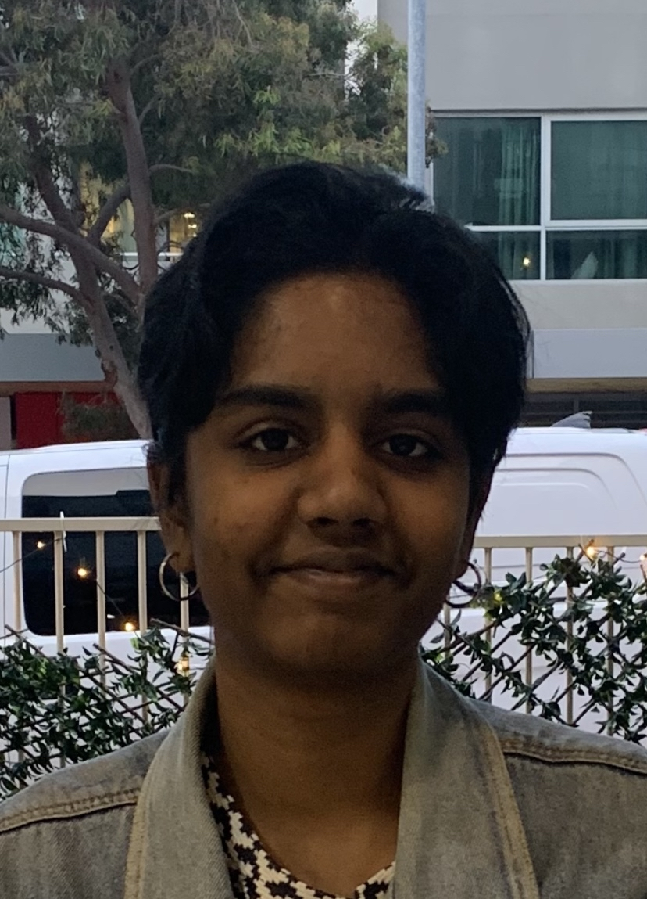

Matthew Daggitt
Lecturer | University of Western Australia
The International Standard for the Verification of Neural Networks
(vnnlib-version <2.0>)
; Network declaration
(declare-network f
(declare-input X float32 [2,2])
(declare-output Y float32 [1])
)
; Input constraints
(assert (and (>= X[0,0] 0.0) (<= X[0,0] 1.0)))
(assert (and (>= X[0,1] 0.0) (<= X[0,1] 1.0)))
(assert (and (>= X[1,0] 0.0) (<= X[1,0] 1.0)))
(assert (and (>= X[1,1] 0.0) (<= X[1,1] 1.0)))
; Output constraints
(assert (or (<= Y[0] -3.0) (>= Y[0] 0.0)))
Introduction
VNN-LIB is an open-source standard for automated solvers of satisfiability problems over neural networks. The goal of the standard is to foster interoperability in the neural network verification community.
To this end, the standard defines:
Contributions and suggestions to the standard are welcome. If interested, please open an issue describing your proposal on the VNN-LIB Standard GitHub repository.
Latest News
See every release on GitHub.
Team Members
Lecturer | University of Western Australia
Postgraduate Researcher | University of Western Australia

Postgraduate Researcher | University of Western Australia
PhD Student | University of Genoa

Full Professor | University of Genoa
Postdoctoral Researcher | University of Genoa

Full Professor | University of Sassari
Postdoctoral Researcher | University of Sassari